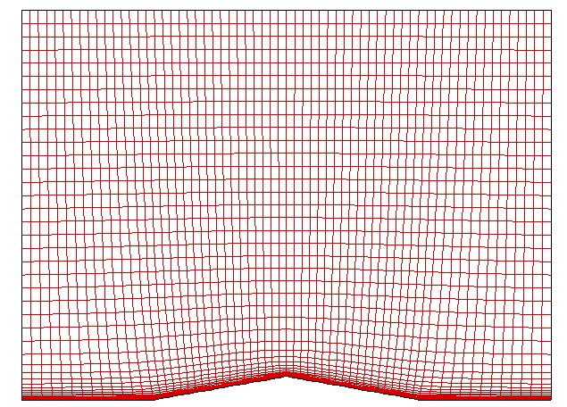
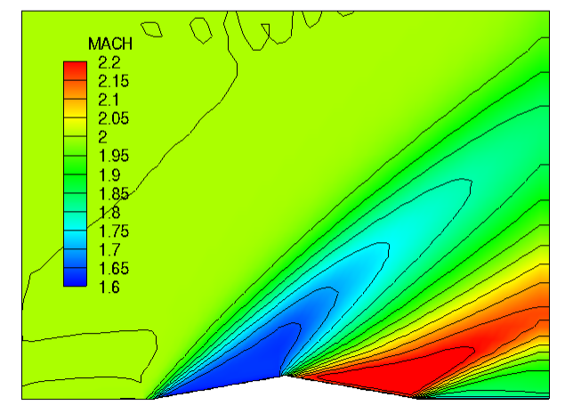

Results and discussions¶
Computational Grid¶
The grid used in this project has a resolution of 65 X 57 in i- and j-directions as shown below. In this project, unsteady 2-dimensional Navier-Stokes solution is being resolved by performing the explicit time-integration.
{kind=link}
<Computational grid>
Inviscid solution (CASE 1 & CASE 2)¶
Following cases were achieved by running the 2DNS code with inviscid option off. The solution was obtained by running 40,000 iterations.
CASE 1
- Inviscid solution
- 1st order accuracy (CFL = 0.5)
For the first order accurate solution, central differencing was applied to solve the inviscid flux terms with AUSMPW+ scheme and to resolve the first derivatives in shear stress and heat flux terms. The following figure represents the fully developed shock waves across the airfoil in terms of local Mach number.
{kind=link}
<Contour plot of Mach number: CASE 1>
CASE 2
- 2nd order accurate (CFL = 0.5)
- with basic minmod limiter
For the second approach to resolve the inviscid solution, the fully upwind scheme for extrapolation was employed based on the characteristics wave direction. Then the basic minmod limiter was turned on to get TVD(Total Variation Diminishing) solution.

<Contour plot of Mach number: CASE 2>
The figure shown below illustrates the resolved pressure profile along the bottom wall boundary for the inviscid fluid. The resulted pressures seem to be overlapped each other. However, very slightly dispersive nature can be found for the 2nd order accurate solution at the shock wave anchored location around x = 0.0 and x = 1.0. On the other hand, dissipative nature is dominated in the first order accurate solution. This can be observed in the contour lines shown above. The CASE 2 contour lines along the shock surface shows wave-looking lines.

<Comparison of static pressure along the bottom wall boundary>
The following figure present the RMS residual history at every iterations. It is observed that the first order accurate solution converges very smoothly with no oscillation nature as discussed above. However, the second order accurate solution clearly represents the TV (Total Varation) dominant phenomenon. This is also called Limit Cycle Oscillations (LCO).

<Comparison of RMS error log>
Viscous flow solution (CASE 3 & CASE 4)¶
Following cases were achieved by running the 2DNS code with inviscid option on. The solution was obtained by running 40,000 iterations.
CASE 3
- Navier-Storkes solution
- 2nd order accurate (CFL = 0.5)
- with basic minmod limiter
- Adiabatic wall BC
{kind=link}
<Contour plot of Mach number: CASE 3>
CASE 4
- Navier-Storkes solution
- 2nd order accurate (CFL = 0.5)
- with basic minmod limiter
- Isothermal wall BC (\(T_{wall}\) = 300 k)

<Contour plot of Mach number: CASE 4>
The figure shown below illustrates the resolved pressure profile along the bottom wall boundary. Here, remarkable difference from the inviscid solution can be observed. The Navier-Stokes solution tends to smear the solution out across the shock forming location. This is a clue of viscous fluid. We observed that the first order accurate solution has a dissipative nature due to the artificial viscosity. Likewise, physical viscous fluids can play a important role in dissipative solution in the high gradient region.
In addition to the dissipative profile, we observe the small bump in the leading edge. This is because a very weak shock forms as the bounday layer grows and leads to the slight change of flow angle.

<Comparison of static pressure along the bottom wall boundary>
Contrary to the inviscid solution, viscous flow solution tends to show some unsteadiness in the RMS residual history. We alreay observe that the RMS log goes slowly down and smoothly converges. However, both CASE 3 and CASE 4 show a slight bump-up and bump-down a while later. This represents the developed separation flow in the boundary layer. This is a distinct nature of viscous flow. Thus the unsteadiness of RMS log is simply due to the physical unsteadiness of the viscous flow.
Furthermore, a slight reduction in the amplitude of the oscillations for the viscous flows is found compared to the previous inviscid flow. It is believed that the oscillatory nature of the viscous flow solution can be a little bit diminished. However, the nature of Limit Cycle Oscillations will never be lost because LCO is the distinct numerical phenomenon of the 2nd order accurate solution.

<Comparison of RMS error log>
Prediction of Boundary Layer Profile¶
Theoretical study of Boundary-Layer thickness
In the earlier study of van Driest (1952) proposed a semiempirical formula to approximate the boundary layer thickness in compressible fluids as a function of freestream Mach number. In this study, the dimensionless boundary-layer thickness was found to grow with the Mach number for both adiabatic and nonadiabatic walls. The predicted boundary layer thickness can be determined by:
Here, \(T_{aw}\) is a wall temperature that would have been achieved if it was set to the adiabatic wall for given freestream Mach number. The estimated adiabatic wall temperature can then be determined by:
where \(\text{Pr}\) is Prandtl number which is evaluated as 0.71432 for given freestream temperature, 300 K. In this project, \(C_{w}\) was set to unity. Finally, boundary layer thickness is then determined as a function of wall temperature \(T_{w}\), distance from leading edge \(x\), and freestream Mach number \(Ma_{e}\).
[Ref. Van Driest, E. R. (1951) “Turbulent Boundary Layer in Compressible Fluids”, J. Aeronaut. Sci., vol. 18, pp. 145-160.]
x = -0.25
By solving the theoretical boundary layer thickness relation above, the following were obtained for both adiabatic wall and isothermal wall.
- Adiabatic wall: \(\delta\) = 0.00664
- Isothermal wall: \(\delta\) = 0.00493
The following figure presents the axial velocity profiles resolved by current CFD solution. As theoretically predicted, adiabatic wall condition gives higher boundary layer thickness. Comparing the CFD solution to the theoretical solution, it can be said that the current CFD solution well follows the theoretical approximation.

<Nondimensional axial velocity profile in boundary layer>
The figure shown below illustrates how the temperature profile looks like for the two different type of wall condition. As can be simply predicted, the adiabatic wall temperature is higher than the isothermal wall temperature which was originally identical to the freestream temperature. The higher temperature field in boundary layer for the adiabatic wall condition can become a primary reason of thicker boundary layer. In other words, the higher temperature the fluid gets, the higher molecular diffusivity becomes. Thus,the higher diffusivity in boundary layer may drag the upper layer of higher momentum.

<Dimensional temperature profile in boundary layer>
x = 0
The same solution can be applied for the boundary layer thickness prediction at x = 0. In this solution, x should be evaluated as the distance from the leading edge so that x = 0.5 m. The theoretically obtained solution are:
- Adiabatic wall: \(\delta\) = 0.00939
- Isothermal wall: \(\delta\) = 0.00698
In this case, we observe big difference between CFD solution and theoretical solution. This can be explained by knowing that the theoretical solution does not take separation flow into account. As the negative axial velocity is observed from the figure below, the CFD solution predicts the separated flow phenomena at this location due to the adverse pressure gradient. As already discussed, the adiabatic wall boundary condition gives rise to the thicker boundary layer regardless of formation of separation flow. Thus it can be concluded that the boundary layer is an outcome of momentum transfer between two upper and lower layer that have different molecular diffusivities. Since we know that viscosity is a dominant function of temperature, the higher wall temperature condition is more likely to give more viscid flow and leads to thicker boundary layer.

<Nondimensional axial velocity profile in boundary layer>

<Dimensional temperature profile in boundary layer>
Computational performance¶
The following table compares the CPU time consumed for each case. We can clearly find that the Navier-Stokes solution consumes much more CPU resource in terms of computational speed because it has to calculate the additional flux terms and more derivatives associated with shear stress and heat conductivity.
CASE # CFL CPU Time [sec] 1 0.5 141.714 2 0.5 189.65 3 0.5 590.071 4 0.5 589.124
The CFL number to ensure the convergence varies for each case. The following tables listed the maximum CFL number that was obtained by experimenting the various CFL number at the interval of 0.05. The slight bigger CFL number than those number triggers the divergence of numerical solution.
CASE # Maximum CFL 1 0.85 2 0.6 3 0.8 4 0.8